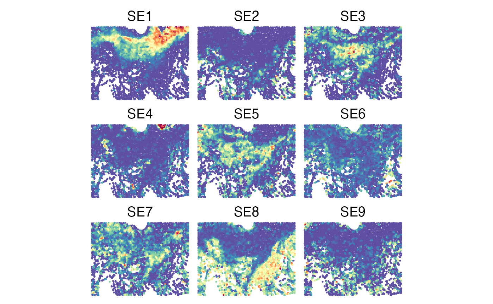
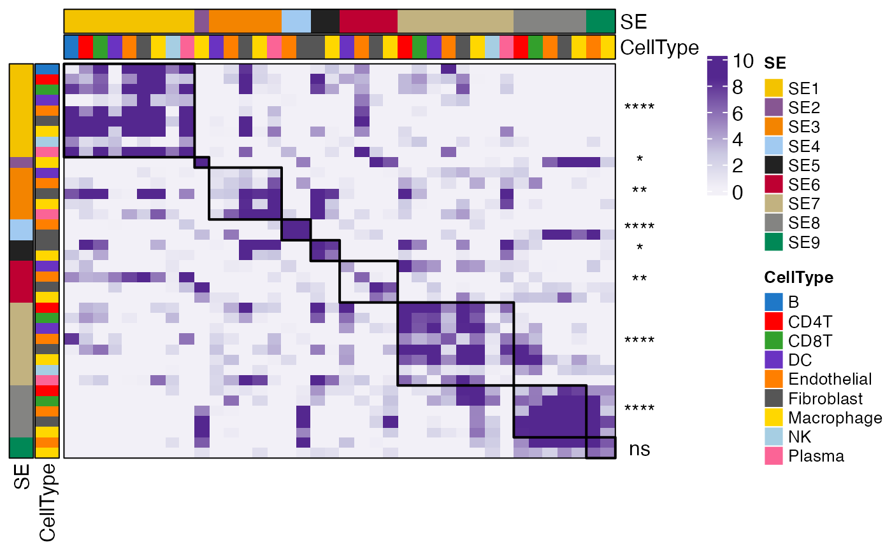
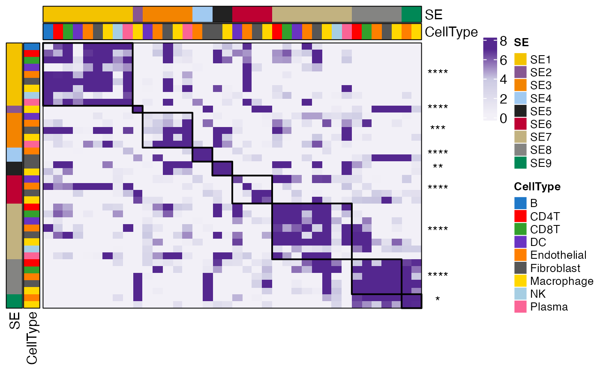
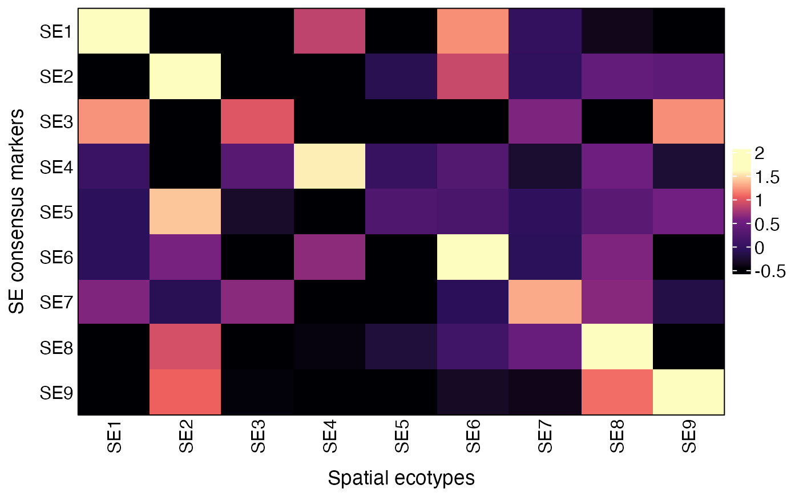
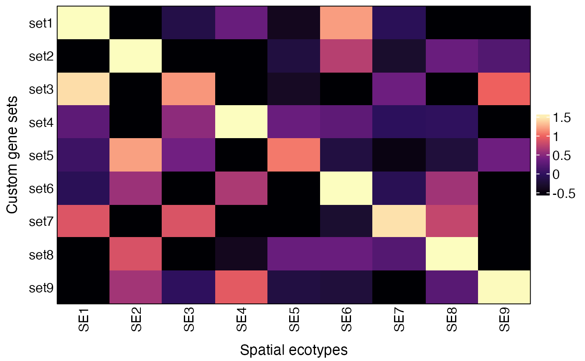

Recovering Spatial Ecotypes from Single-Cell Spatial Transcriptomics Data
Source:vignettes/Recovery_scST.Rmd
Recovery_scST.RmdOverview
In this tutorial, we will illustrate how to recover spatial ecotypes (SEs) from single-cell-scale spatial transcriptomics (ST) data, generated by platforms such as MERSCOPE, Xenium, CosMx, and Visium HD.
First load required packages for this vignette
Data preparation
SE recovery for single-cell ST data requires two inputs:
- Gene expression matrix: a numeric matrix with genes as rows and cells as columns.
- Metadata: a data frame containing at least three columns: “X” (x-coordinate), “Y” (y-coordinate), and “CellType” (cell type annotation). Row names must match the column names (cell IDs) of the expression matrix.
Text files as input
# Load metadata
scmeta <- read.table("https://spatialecotyper.stanford.edu/inc/inc.public.vignettes.php?file=CRC2_subset_scmeta.tsv",
sep = "\t", header = TRUE, row.names = 1)
head(scmeta[, c("X", "Y", "CellType")])## X Y CellType
## HumanColonCancerPatient2__cell_1085 5057.912 -1721.871 Macrophage
## HumanColonCancerPatient2__cell_1205 5035.339 -1783.352 Macrophage
## HumanColonCancerPatient2__cell_1312 5012.093 -1908.390 Macrophage
## HumanColonCancerPatient2__cell_1625 5073.743 -1861.740 Macrophage
## HumanColonCancerPatient2__cell_1629 5030.235 -1867.441 Macrophage
## HumanColonCancerPatient2__cell_1639 5020.448 -1882.751 Macrophage
# Load expression matrix
scdata <- fread("https://spatialecotyper.stanford.edu/inc/inc.public.vignettes.php?file=CRC2_subset_counts.tsv.gz",
sep = "\t",header = TRUE, data.table = FALSE)
rownames(scdata) <- scdata[, 1]
scdata <- as.matrix(scdata[, -1])
head(scdata[,1:5])## HumanColonCancerPatient2__cell_1085 HumanColonCancerPatient2__cell_1205
## PDK4 0 0
## CCL26 0 0
## CX3CL1 0 0
## PGLYRP1 0 0
## CD4 0 0
## SNAI2 0 0
## HumanColonCancerPatient2__cell_1312 HumanColonCancerPatient2__cell_1625
## PDK4 1 0
## CCL26 0 0
## CX3CL1 0 0
## PGLYRP1 0 0
## CD4 0 0
## SNAI2 0 0
## HumanColonCancerPatient2__cell_1629
## PDK4 0
## CCL26 0
## CX3CL1 0
## PGLYRP1 0
## CD4 0
## SNAI2 0Data normalization
The data should be normalized to a log-transformed CPM (counts per
million) or a similar scale. The NormalizeData function is
applied at this step to perform this normalization.
normdata = NormalizeData(scdata)SE recovery
The RecoverSE function will be used to assign single cells into SEs. Users can either use default model to recover predefined SEs or use custom model to recover newly defined SEs.
Note: Cell type annotation (celltypes
argument) is required.
Using default models
The default NMF models were trained on MERSCOPE data across carcinomas and melanoma. The model supports the following cell types: B cells, CD4+ T cells, CD8+ T cells, NK cells, plasma cells, macrophages, dendritic cells, fibroblasts, and endothelial cells. All cells in the query data should be grouped into one of “B”, “CD4T”, “CD8T”, “NK”, “Plasma”, “Macrophage”, “DC”, “Fibroblast”, and “Endothelial”, case sensitive. All the other cell types will be assigned to NonSE.
## CID
## HumanColonCancerPatient2__cell_1085 HumanColonCancerPatient2__cell_1085
## HumanColonCancerPatient2__cell_1205 HumanColonCancerPatient2__cell_1205
## HumanColonCancerPatient2__cell_1312 HumanColonCancerPatient2__cell_1312
## HumanColonCancerPatient2__cell_1625 HumanColonCancerPatient2__cell_1625
## HumanColonCancerPatient2__cell_1629 HumanColonCancerPatient2__cell_1629
## HumanColonCancerPatient2__cell_1639 HumanColonCancerPatient2__cell_1639
## CellType InitSE SE PredScore
## HumanColonCancerPatient2__cell_1085 Macrophage SE11 SE9 0.7484101
## HumanColonCancerPatient2__cell_1205 Macrophage SE09 NonSE 0.8450224
## HumanColonCancerPatient2__cell_1312 Macrophage SE11 SE9 0.7659342
## HumanColonCancerPatient2__cell_1625 Macrophage SE07 SE6 0.6217793
## HumanColonCancerPatient2__cell_1629 Macrophage SE08 SE7 0.5823970
## HumanColonCancerPatient2__cell_1639 Macrophage SE11 SE9 0.8723833The SE recovery output contains five columns: cell ID (CID), cell type (CellType), initial SE assignment (InitSE), final SE assignment (SE), and prediction score (PredScore).
Using custom models
To use custom model, users should first develop a model following the tutorial NMF Model Development for Spatial Ecotype Recovery from Single-Cell and Spatial Transcriptomics Data. The resulting model can be used for SE recovery. An example model is available at SE_Recovery_W_list.rds.
Download a custom model
url <- "https://spatialecotyper.stanford.edu/inc/inc.public.vignettes.php?file=SE_Recovery_W_list.rds"
download.file(url, destfile = "SE_Recovery_W_list.rds", mode = "wb")Load the custom model
Ws <- readRDS("SE_Recovery_W_list.rds")
names(Ws) ## named list of W matrices
head(Ws[[1]]) ## feature by SE matrixUsing custom model for SE recovery by specifying the Ws
argument.
sepreds <- RecoverSE(normdata, celltypes = scmeta$CellType, Ws = Ws)After prediction, we recommend retaining only assignments corresponding to SE-specific cell states identified in Tutorial 4. Cells not assigned to these SE-specific states should be grouped as “NonSE,” as they cannot be robustly mapped to the corresponding SE.
The SE recovery output contains five columns: cell ID (CID), cell type (CellType), initial SE assignment (InitSE), final SE assignment (SE), and prediction score (PredScore). By default, assignments with PredScore ≥ 0.6 are retained as high-confidence results. For custom models, users are encouraged to determine the optimal threshold based on leave-one-sample-out cross-validation.
Combine SE recovery results into metadata
Visualization of SE recovery results in the tissue
To visualize the spatial SE landscape, we recommend computing SE abundances within spatial neighborhoods and displaying the continuum of SE levels across the tissue, rather than directly plotting SE assignments. Direct visualization of SE assignments may bias interpretation due to variation in cell density and the presence of a large number of non-SE cells, including cells with low detection of SE marker genes and cells belonging to cell states that are not specific to any individual SE.
# Compute SE abundances by SNs
seabunds = ComputeSEAbundanceBySN(scmeta)
colors = rev(RColorBrewer::brewer.pal(11, "Spectral"))
plist = lapply(colnames(seabunds)[-(1:3)], function(se){
p = SpatialView(seabunds, by = se, X = "X", Y = "Y", pt.size = 0.5) +
coord_fixed() + scale_color_gradientn(colors = colors) +
theme(legend.position = "none", plot.title = element_text(hjust = 0.5)) +
labs(title = se)
p
})
p = patchwork::wrap_plots(plist, nrow = 3)
plot(p)
Validation: spatial colocalization of SE cell states
After recovering SE-specific cell states from single-cell ST data, users can validate the SEs by testing whether cell states belonging to the same SE are more spatially colocalized than expected by random chance using the Colocalization function. The spatial coordinates (column X and Y), SE and cell type (CellType) are required for the analysis. The function also evaluates the significance of cell state colocalization within each SE and returns a vector of p-values.
## X Y SE CellType
## HumanColonCancerPatient2__cell_1085 5057.912 -1721.871 SE9 Macrophage
## HumanColonCancerPatient2__cell_1205 5035.339 -1783.352 NonSE Macrophage
## HumanColonCancerPatient2__cell_1312 5012.093 -1908.390 SE9 Macrophage
## HumanColonCancerPatient2__cell_1625 5073.743 -1861.740 SE6 Macrophage
## HumanColonCancerPatient2__cell_1629 5030.235 -1867.441 SE7 Macrophage
## HumanColonCancerPatient2__cell_1639 5020.448 -1882.751 SE9 Macrophage
## For quick test run, 100 permutations were performed to compute the colocalization scores.
coloc_res = Colocalization(scmeta, coords = c("X", "Y"),
SE = "SE", CellType = "CellType",
radius = 50,
nperm = 100, ## 1000 or higher is recommended.
test = TRUE,
ncores = 8)
head(coloc_res$ColocIndex[, 1:5]) ## Matrix of colocalization indices between all cell states## NonSE_B NonSE_CD4T NonSE_CD8T NonSE_DC
## NonSE_B 3.34650540 -0.2707164 -3.3502960 -2.7004132
## NonSE_CD4T -0.01287549 2.4311625 -0.8906792 -2.4219334
## NonSE_CD8T -3.13047262 -0.9903922 0.9924283 -2.1475396
## NonSE_DC -2.70951074 -1.9805514 -1.7645476 -0.9794100
## NonSE_Endothelial -1.89724493 1.9774770 -2.1187192 0.9487738
## NonSE_Fibroblast -15.73885563 -2.1847363 -11.3861232 5.1847945
## NonSE_Endothelial
## NonSE_B -2.023285
## NonSE_CD4T 2.219099
## NonSE_CD8T -1.793770
## NonSE_DC 1.190721
## NonSE_Endothelial 4.142804
## NonSE_Fibroblast 10.712091
coloc_res$Pval ## Vector of p-values for colocalization significance## NonSE SE1 SE2 SE3 SE4 SE5
## 3.016923e-01 3.936888e-06 2.308056e-02 4.946580e-03 1.421065e-12 2.451790e-02
## SE6 SE7 SE8 SE9
## 3.279394e-03 6.543934e-05 6.385358e-05 9.773195e-02
## attr(,"Zscore")
## NonSE SE1 SE2 SE3 SE4 SE5 SE6 SE7
## 1.032811 4.614687 2.272098 2.810492 7.081983 2.248915 2.940258 3.992286
## SE8 SE9
## 3.998098 1.655950The ColocalizationMetaAnalysis function can be used to perform meta-analysis of cell-state colocalization results across samples. It applies Stouffer’s method to combine colocalization indices across ST samples and to aggregate SE-specific z-scores, generating an integrated colocalization index matrix and a meta P value for each SE.
# Generate a second colocalization result for demonstration of integrative analysis
coloc_res2 = Colocalization(scmeta, nperm = 100, ncores = 8)
coloc_res_list = list(Sample1 = coloc_res, Sample2 = coloc_res2)
# Combine colocalization results from multiple samples using meta-analysis
meta_coloc_res = ColocalizationMetaAnalysis(coloc_res_list)
# Integrated matrix of cell-state colocalization indices
head(meta_coloc_res$MetaColocIndex[, 1:5])## NonSE_B NonSE_CD4T NonSE_CD8T NonSE_DC NonSE_Endothelial
## NonSE_B 5.07247839 -0.2903617 -4.432384 -3.711020 -2.932193
## NonSE_CD4T 0.08293172 3.3141932 -1.189924 -3.184232 3.355418
## NonSE_CD8T -4.14518968 -1.3311298 1.452172 -2.971578 -2.535319
## NonSE_DC -3.66863721 -2.6905039 -2.429048 -1.394476 1.527815
## NonSE_Endothelial -2.81857717 2.9869371 -3.005599 1.220219 5.954284
## NonSE_Fibroblast -7.07106731 -3.0606581 -7.071067 7.071067 7.071067
# Meta-analysis P values
meta_coloc_res$MetaPval## NonSE SE1 SE2 SE3 SE4 SE5
## 1.498594e-01 5.233469e-09 5.755518e-05 1.622291e-04 7.552769e-19 2.082041e-03
## SE6 SE7 SE8 SE9
## 6.789380e-05 6.966751e-09 4.958579e-08 1.616658e-02You can visualize the results using the CooccurrenceHeatmapView function.
## Visualization of single-sample result
idx = grepl("NonSE", rownames(coloc_res$ColocIndex))
p = CooccurrenceHeatmapView(coloc_res$ColocIndex[!idx, !idx],
coloc_res$Pval)
p = ComplexHeatmap::draw(p)
ses = gsub("_.*", "", rownames(coloc_res$ColocIndex)[!idx])
drawRectangleAnnotation(p, ses, ses)
## Visualization of integrated result
idx = grepl("NonSE", rownames(meta_coloc_res$MetaColocIndex))
p = CooccurrenceHeatmapView(meta_coloc_res$MetaColocIndex[!idx, !idx],
meta_coloc_res$MetaPval)
p = ComplexHeatmap::draw(p)
ses = gsub("_.*", "", rownames(meta_coloc_res$MetaColocIndex)[!idx])
drawRectangleAnnotation(p, ses, ses)
Validation: spatial autocorrelation
Users can also validate the SEs by assessing the spatial autocorrelation with Moran’s I. To control for bias, permutation experiments will be performed to normalize Moran’s I into z-scores using the ComputeNormalizedMoranI function.
## For quick test run, test with 10 permutations were performed.
morani_zscore = ComputeNormalizedMoranI(scmeta, coords = c("X", "Y"),
SE = "SE", CellType = "CellType",
nperm = 10, ncores = 8)
morani_zscore## NonSE SE1 SE2 SE3 SE4 SE5 SE6 SE7
## 16.10924 112.41159 21.03817 15.88482 68.45453 10.81209 10.53194 14.31169
## SE8 SE9
## 64.03524 12.63457Validation: average expression of SE markers
Users can also validate the SEs by visualizing the average expression of SE consensus markers across recovered SEs using the AverageMarkerExpression function.
## The function is built on Seurat functions, so first create a Seurat object.
obj = CreateSeuratObject(scdata, meta.data = scmeta)
obj = NormalizeData(obj)By default, the AverageMarkerExpression function compute the average expression of SE consensus markers from Zhang et al., Nature 2026 paper.
## Visualize average expression of SE consensus markers across recovered SEs
res = AverageMarkerExpression(obj, group.by = "SE")
plot(res$p)
# Underlying data
res$AvgExp## SE1 SE2 SE3 SE4 SE5 SE6
## SE1 1.64310803 -0.8007004 -0.4718167 0.8522570 -0.96964628 1.21537338
## SE2 -0.81143531 1.6599660 -0.6107910 -1.7565210 -0.11904230 0.89493663
## SE3 1.22827182 -0.4908875 0.9912317 -1.3258498 -0.59052150 -0.88788571
## SE4 0.05995507 -2.2297775 0.3203690 1.5636665 0.02369937 0.27645631
## SE5 -0.07520082 1.4154704 -0.3002660 -2.3203460 0.24963357 0.19205368
## SE6 -0.06920212 0.5743832 -0.9002570 0.6527376 -0.65831113 1.61867945
## SE7 0.60180356 -0.1010692 0.6417308 -2.1386405 -0.70025731 -0.08220531
## SE8 -1.29073176 0.9439473 -0.7557330 -0.4426143 -0.21890447 0.10191738
## SE9 -1.00997936 1.0607284 -0.4580196 -0.7019416 -0.93612233 -0.33709362
## SE7 SE8 SE9
## SE1 -0.01141961 -0.3887291 -1.0684263
## SE2 -0.04353214 0.4201252 0.3662939
## SE3 0.59448136 -0.7350578 1.2162175
## SE4 -0.27540944 0.5112415 -0.2502008
## SE5 -0.04716035 0.3359902 0.5498253
## SE6 -0.07935130 0.5969964 -1.7356751
## SE7 1.31271515 0.6286474 -0.1627246
## SE8 0.46433598 1.9562195 -0.7584367
## SE9 -0.39112253 1.1012344 1.6723163The AverageMarkerExpression
function can also be used to visualize the average expression of
user-defined gene sets by specifying the genesets parameter
as a list of gene lists.
genesets = list(set1 = c("FOS", "EGR1", "DUSP1", "JUNB", "JUN", "FOSB"),
set2 = c("SPP1", "CCL2", "MMP9"),
set3 = c("CXCL12", "TGFBR2", "PDK4", "HLA-DMA"),
set4 = c("ACTA2", "CAV1", "CLDN5"),
set5 = c("LRP1", "MAFB"),
set6 = c("CXCL2", "NFKBIA", "CDKN1A"),
set7 = c("STAT1", "TAP1", "HLA-A", "HLA-B", "HLA-C", "B2M"),
set8 = c("PKM", "PCNA", "BST2"),
set9 = c("NRP1", "ITGB1", "CD276"))
res = AverageMarkerExpression(obj, group.by = "SE", genesets = genesets)
plot(res$p)
Session info
The session info allows users to replicate the exact environment and identify potential discrepancies in package versions or configurations that might be causing problems.
## R version 4.4.1 (2024-06-14)
## Platform: aarch64-apple-darwin20
## Running under: macOS 26.5.2
##
## Matrix products: default
## BLAS: /Library/Frameworks/R.framework/Versions/4.4-arm64/Resources/lib/libRblas.0.dylib
## LAPACK: /Library/Frameworks/R.framework/Versions/4.4-arm64/Resources/lib/libRlapack.dylib; LAPACK version 3.12.0
##
## locale:
## [1] en_US.UTF-8/en_US.UTF-8/en_US.UTF-8/C/en_US.UTF-8/en_US.UTF-8
##
## time zone: America/Los_Angeles
## tzcode source: internal
##
## attached base packages:
## [1] parallel stats graphics grDevices utils datasets methods
## [8] base
##
## other attached packages:
## [1] SpatialEcoTyper_1.0.4 pals_1.9 NMF_0.28
## [4] Biobase_2.64.0 BiocGenerics_0.50.0 cluster_2.1.6
## [7] rngtools_1.5.2 registry_0.5-1 RANN_2.6.2
## [10] Matrix_1.7-0 data.table_1.18.4 Seurat_5.1.0
## [13] SeuratObject_5.0.2 sp_2.1-4 ggplot2_4.0.3
## [16] dplyr_1.2.1
##
## loaded via a namespace (and not attached):
## [1] RcppAnnoy_0.0.22 splines_4.4.1 later_1.3.2
## [4] R.oo_1.26.0 tibble_3.3.1 polyclip_1.10-7
## [7] fastDummies_1.7.4 lifecycle_1.0.5 sf_1.1-0
## [10] doParallel_1.0.17 globals_0.16.3 lattice_0.22-6
## [13] MASS_7.3-60.2 magrittr_2.0.5 plotly_4.10.4
## [16] sass_0.4.9 rmarkdown_2.28 jquerylib_0.1.4
## [19] yaml_2.3.10 httpuv_1.6.15 sctransform_0.4.1
## [22] spam_2.10-0 spatstat.sparse_3.1-0 reticulate_1.39.0
## [25] cowplot_1.1.3 mapproj_1.2.11 pbapply_1.7-2
## [28] DBI_1.3.0 RColorBrewer_1.1-3 maps_3.4.2
## [31] abind_1.4-8 Rtsne_0.17 R.utils_2.12.3
## [34] purrr_1.0.2 circlize_0.4.18 IRanges_2.38.1
## [37] S4Vectors_0.42.1 ggrepel_0.9.6 irlba_2.3.5.1
## [40] listenv_0.9.1 spatstat.utils_3.1-0 units_1.0-1
## [43] goftest_1.2-3 RSpectra_0.16-2 spatstat.random_3.3-1
## [46] fitdistrplus_1.2-1 parallelly_1.38.0 pkgdown_2.1.0
## [49] leiden_0.4.3.1 codetools_0.2-20 tidyselect_1.2.1
## [52] shape_1.4.6.1 farver_2.1.2 matrixStats_1.5.0
## [55] stats4_4.4.1 spatstat.explore_3.3-2 jsonlite_1.8.8
## [58] GetoptLong_1.1.1 e1071_1.7-16 progressr_0.14.0
## [61] ggridges_0.5.6 survival_3.6-4 iterators_1.0.14
## [64] systemfonts_1.1.0 foreach_1.5.2 tools_4.4.1
## [67] ragg_1.3.2 ica_1.0-3 Rcpp_1.1.2
## [70] glue_1.8.1 gridExtra_2.3.1 xfun_0.52
## [73] withr_3.0.3 BiocManager_1.30.25 fastmap_1.2.0
## [76] boot_1.3-30 spData_2.3.4 digest_0.6.39
## [79] R6_2.6.1 mime_0.12 wk_0.9.5
## [82] textshaping_0.4.0 colorspace_2.1-2 scattermore_1.2
## [85] tensor_1.5 dichromat_2.0-0.1 spatstat.data_3.1-2
## [88] R.methodsS3_1.8.2 tidyr_1.3.1 generics_0.1.4
## [91] class_7.3-22 httr_1.4.7 htmlwidgets_1.6.4
## [94] spdep_1.4-2 uwot_0.2.2 pkgconfig_2.0.3
## [97] gtable_0.3.6 ComplexHeatmap_2.20.0 lmtest_0.9-40
## [100] S7_0.2.2 htmltools_0.5.8.1 dotCall64_1.1-1
## [103] clue_0.3-68 scales_1.4.0 png_0.1-9
## [106] spatstat.univar_3.0-1 knitr_1.48 rstudioapi_0.16.0
## [109] reshape2_1.4.4 rjson_0.2.23 nlme_3.1-164
## [112] proxy_0.4-27 cachem_1.1.0 zoo_1.8-12
## [115] GlobalOptions_0.1.4 stringr_1.5.1 KernSmooth_2.23-24
## [118] miniUI_0.1.1.1 s2_1.1.9 desc_1.4.3
## [121] pillar_1.11.1 grid_4.4.1 vctrs_0.7.3
## [124] promises_1.3.0 xtable_1.8-4 evaluate_0.24.0
## [127] magick_2.8.5 cli_3.6.6 compiler_4.4.1
## [130] rlang_1.3.0 crayon_1.5.3 future.apply_1.11.2
## [133] labeling_0.4.3 classInt_0.4-11 plyr_1.8.9
## [136] fs_1.6.4 stringi_1.8.4 viridisLite_0.4.3
## [139] deldir_2.0-4 gridBase_0.4-7 lazyeval_0.2.2
## [142] spatstat.geom_3.3-2 RcppHNSW_0.6.0 patchwork_1.2.0
## [145] future_1.34.0 shiny_1.9.1 highr_0.11
## [148] ROCR_1.0-11 igraph_2.0.3 bslib_0.8.0